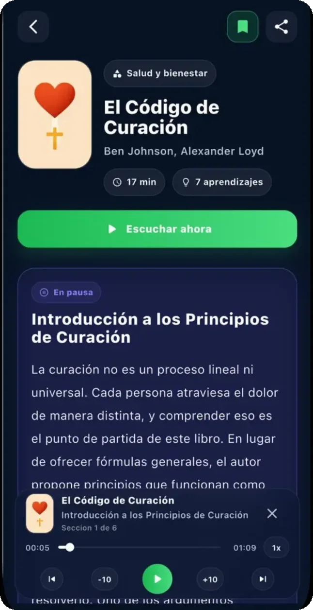

Con créditos
Un crédito desbloquea un Zap y se queda tuyo. Sin suscripción, sin fecha de vencimiento.
- Acceso permanente al Zap que desbloqueas
- Texto y audio del mismo título
- Pagas únicamente lo que abres
Zaps en español · para iPhone
Leemos el libro completo y te entregamos sus ideas en un Zap de unos veinte minutos. Para leer o para escuchar, en español.
Se empieza gratis. Sigues si te sirve.
Capítulo 1 · El trayecto
No es falta de interés. Es falta de trayectos. Un Zap cabe en uno: el de la mañana, el del gimnasio, el de vuelta.
Capítulo 2 · Cómo nace un Zap
Capítulo 3 · Un Zap por dentro
Capturas reales de la app · versión 1.3


Lo que te llevas
Pasa el cursor por el texto —o arrastra el dedo— y mira lo que un Zap rescata de un libro entero. Cada aprendizaje es una frase que puedes aplicar mañana.
Capítulo 4 · El catálogo
Son los números de la app hoy, contados uno por uno en la base. Cada barra es una categoría; tócala o pasa el cursor para ver cuántos títulos tiene.
Capítulo 5 · Lo que dicen
Zapienz es una app joven: en el App Store de México tiene dos reseñas con texto. Están aquí las dos, citadas tal cual.
★★★★★
«Lo recomiendo !»
“Hoy en día los podcast me ayudado a aprender de una manera más rápida y diferente y sin duda esta aplicación lo ha hecho aún mejor…”
★★★★★
«Me encantó la app»
“Es muy práctico escuchar el audio mientras voy manejado y los libros que tienen están muy interesantes ✨”
Capítulo 6 · Cómo se paga
Un crédito desbloquea un Zap y se queda tuyo. Sin suscripción, sin fecha de vencimiento.
Catálogo completo
Los 303 Zaps abiertos, y los que entren cada semana entran contigo. Mensual o anual; se cancela cuando quieras.
Los precios vigentes están en la ficha de la app, en el App Store.
El Zap terminó. Ahora te toca a ti.
Descargar Zapienz para iPhoneGratis en el App Store de México · se empieza sin pagar